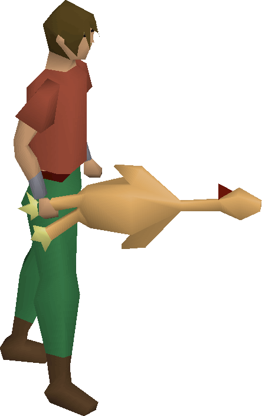

Recipe for Disaster

Quests Needed
This page will go into detail about what quests you're gonna need to complete
for the Recipe of Disaster quest line.
- Big Chompy Bird Hunting
- Biohazard
- Cook's Assistant
- Demon Slayer
- Desert Treasure
- Fishing Contest
- Gertrude's Cat
- Goblin Diplomacy
- Horror From The Deep
- Lost City
- Monkey Madness
- Murder Mystery
- Nature Spirit
- Priest in Peril
- The Restless Ghost
- Shadow of the Storm
- Witch's House
- must have started the Legends Quest
Items Needed
- About 320 coins
- Bowl of water
- Bucket of water
- 3 buckets of milk
- 2 eggs
- Orange
- Banana
- Any dye except red, yellow or orange
- Spice or gnome spice
- Gloves
- Charcoal
- Fishing bait
- Fishbowl
- 2 bread
- Pestle and mortar
- Needle
- 3 bronze wires
- Cake tin
- 4 Asgarian ale
- Any cat except an overgrown cat
- Several bowls of stew
- Raw chompy
- Raw chicken
- Raw cod
- Iron spit
- Regular logs
- Tinderbox
- Ball of wool
- Ogre bellows
- Ogre bow
- 2 pots of flour
- Pot of cornflour
- Pot of cream
- Any axe
- Any pickaxe
- Any Machete
- Knife
- Dramen staff and branch
- M'speak amulet
- Gorilla, ninja and zombie greegree
- Monkey nuts
- Rope
Homepage